Menu Démarrer Classique (Open-Shell Menu)
Menu Démarrer Classique (Open-Shell Menu)
Menu Démarrer Classique (Open-Shell Menu)
est un menu démarrer flexible qui peut mimiquer l’attitude du menu démarrer de Windows 2000, XP et Windows 7. Il a une variété de fonctions avancées :
- Choisissez parmis les styles “Classic” et “Windows 7”
- Le Glisser et Déposer vous laisse organiser vos applications
- Options pour afficher les Favoris, développer le Panneau de Configuration, etc
- Afficher les documents récemment utilisés. Le nombre de documents à afficher et personnalisable
- Traduit dans 35 langues, incluant le support Droite-Gauche pour l’Arabe et l’Hébreux
- Ne désactive pas le menu démarrer orginal de Windows. You can access it by Maj+Clic sur le bouton du menu
- Clic droit sur un élément du menu pour le supprimer, le renomer, le trier, ou effectuer d’autres tâches
- La boîte de recherche vous aide à trouver les logiciels et fichiers sans avoir à utiliser vos raccourcis claviers
- Support des listes de raccourcis pour un accès rapide aux documents récents et tâches courantes
- Disponible pour les systèmes d'exploitation 32 et 64-bit
- Supporte les peaux (skins), incluant aditionnellement les peaux (skins) de tierces parties. Créez la vôtre !!
- Entièrement personnalisable autant pour le look que pour les fonctionnalités
- Support pour l'Active Accéssibilité de Microsoft (Microsoft’s Active Accessibility)
- Convertit le bouton “Tous les Programmes” de menu Windows en menu cascadé
- Implémente un bouton démarrer personnalisable
- Peut afficher, rechercher et lancer les applications du Magasin Windows (Windows 8) - (Windows Store)
- Et enfin, mais pas moins important, – c”est GRATUIT
Styles
Le menu démarrer offre 3 choix de styles.
1) Simple colonne style classique (classic)
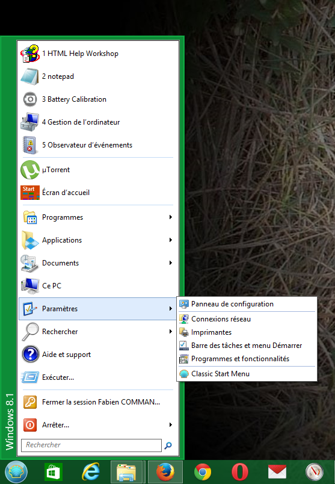
Ce style est très similaire au menu trouvé dans Windows 2000. Il a une colonne dans le menu principal avec du texte vertical sur le côté, vous pouvez personnaliser l'ordre des éléments, icônes et texte.
Programmes, listes de raccourcis, et résultats de recherche s'affichent comme des sous-menus cascadés.
2) Style classique (classic) 2 colonnes
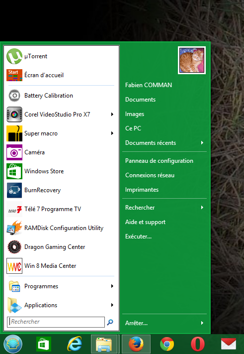
Ceci est similaire au menu de Windows XP. Il y a 2 colonnes où vous pouvez arranger vos éléments de menu.
Personnaliser leurs ordres, icônes et texte.
Programmes, listes de raccourcis, et résultats de recherche s'affichent comme des sous-menus cascadés.
3) Style Windows 7
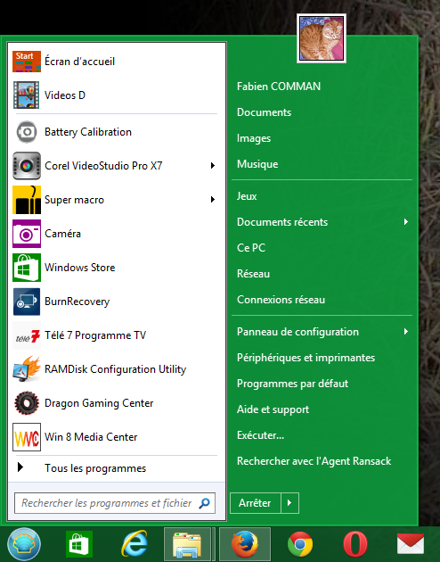
Ceci est similaire au menu Windows Vista et Windows 7. Les éléments dans la première colonne sont prédéfinis comme épingler et Programmes Récents, la liste de Tous les Programmes et la zone de recherche.
Les éléments dans la seconde colonne sont entièrement personnalisable.
Les listes de raccourcis et les résultats de recherche sont affichés à l'intérieur du menu principal. Les programmes peuvent être à l'intérieur du menu principal ou
s'afficher sous la forme d’un sous-menu cascadé.
Ce style offre moins d’ options de personnalisation que les styles classiques (classic), mais donne une apparence et un sentiment plus familier aux personnes ayant utilisé Windows 7.
Opération
Si vous avez utilisé le menu démarrer dans les anciennes versions de Windows, vous vous sentirez comme à la maison :
Appuyez sur la touche Windows ou cliquez sur l’ orbe de Open-Shell dans le coin de l’ écran pour ouvrir le menu démarrer.
Maintenez Majuscule enfoncée pendant que vous cliquez sur l’ orbe de Open-Shell pour accéder au menu démarrer d'origine du système d'exploitation.
Cliquez sur un élément pour l'exécuter.
Glissez un programme pour changer l'ordre des programmes dans un menu, ou pour le déplacer dans un autre dossier.
Clic droit sur un élément pour le renomer, le supprimer, l’explorer, trier le menu, ou effectuer d'autres tâches.
Clic droit sur l’orbe de Open-Shell pour modifier les paramètres du menu démarrer, pour voir ce fichier d’aide, ou pour stopper le menu démarrer.
Paramètres
Clic droit sur le menu démarrer pour accéder aux paramètres.
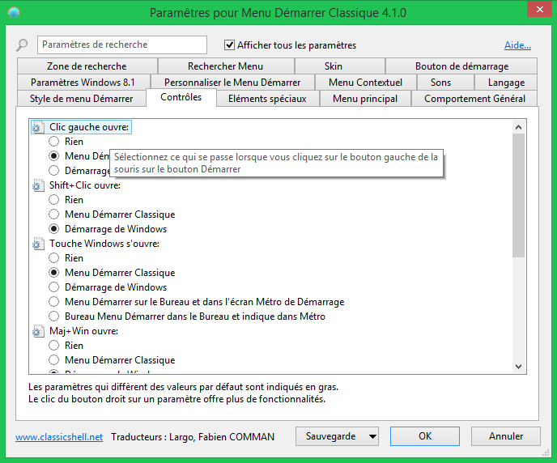
Vous pouvez choisir d'afficher les paramètres de base ou tous les paramètres disponibles. Survolez chaque paramètre pour obtenir une description de sa fonction.
Saisissez un mot dans la zone de recherche pour trouver un paramètre grâce à son nom.
Chaque paramètre à une valeur par défaut. La valeur par défaut peut-être une constante, ou elle peut dépendre des paramètres systèmes actuels.
Une fois que vous modifiez un paramètre, celui-ci devient "modifié" et est affiché en gras. Pour revenir au paramètre par défaut, clic droit sur le paramètre.
Vous pouvez sauvegarder les paramètres dans un fichier XML, et plus tard les recharger.
Appuyer sur le bouton Sauvegarde pour avoir accès à ces fonctions. A partir de là vous pouvez réinitialiser tous les paramètres à leurs paramètres par défaut.
La plupart des paramètres prendront effets immédiatement au moment ou vous les modifiez. Par exemple, vous pouvez modifier le menu démarrer
pour voir les changements. Un petit nombre de paramètres nécessiteront que vous quittiez le menu démarrer avant que vous puissiez voir les changements.
Note: Toutes les fenêtres des paramètres sont redimensionnables. Redimensionnez-les et placez-les où vous voulez qu'elles soient. Elles se rappeleront de la nouvelle position.
Cliquez sur l’onglet Personnaliser le Menu Démarrer pour personnaliser les éléments du menu. En fonction du style vous verrez différentes interfaces graphiques.
Pour les styles classiques (classic) vous pouvez personnaliser les deux colonnes du menu démarrer et créer des sous-menus. La colonne de gauche affiche les éléments actuels du menu
et la colonne de droite affiche les éléments de menu disponibles. Faîtes un Glisser/Déposer de la droite à la gauche pour ajouter des éléments au menu.
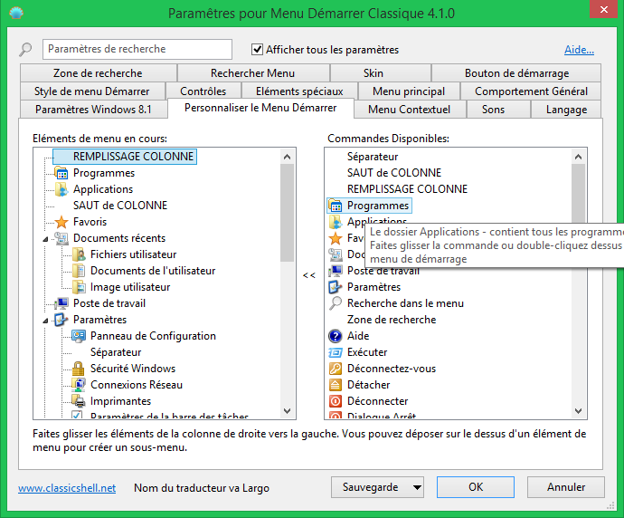
Pour le style Windows 7 vous pouvez seulement modifier les éléments de la seconde colonne et il n’y a pas de sous-menus.
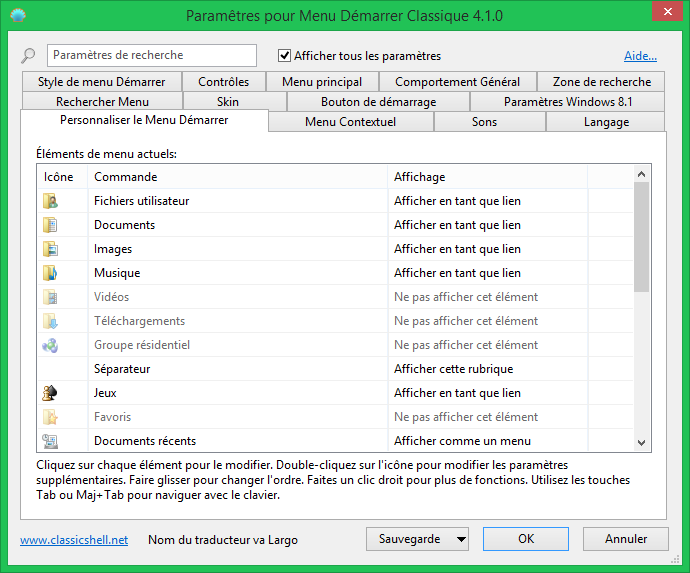
Double cliquez sur l'icône pour modifier les propriétés de l'élément:
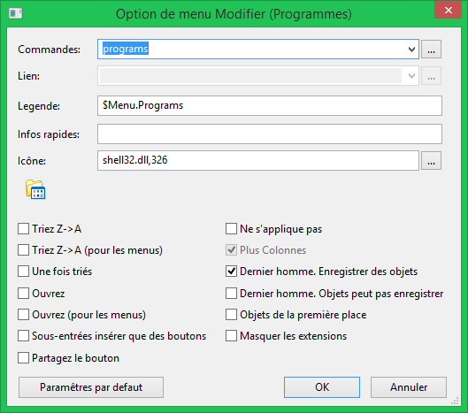
Ici vous pouvez sélectionner une commande pour l'élément, son texte, icône et autres attributs.Appuyer sur le bouton
Restaurer les paramètres par défaut pour obtenir le texte et l’icône par défaut pour la commande choisie.
La commande peut être :
- une des commandes prédéfinies - à partir de la liste déroulante
- chaîne d'exécutable personnalisée
- ceci peut être le nom d’un programme et de sesarguments, ou même une URL
(comme http://www.google.com). Les variables d'environnement comme %SystemRoot% sont supportées
- laisser vide - Puis si l'attribut lien est utilisé, il agira comme une commande.
Ce lien peut être un chemin d'accès vers un fichier ou un dossier. Si c'est un fichier, ce fichier sera exécuter. Si c'est un dossier, ce dossier sera ouvert sous la forme d'un sous-menu.
Certains éléments de menu (comme Programmes et Favories) ont un lien implicite, alors dans ce cas la zone de Lien sera désactivée.
L’icône peut être :
- laisser vide - puis si le l'attribut lien pointe vers un fichier ou un dossier, l’icône de ce fichier ou dossier sera utilisé
- fichier ressource, icône ID - par exemple%windir%\notepad.exe,2. Ne laissez pas d'espace entre le nom du fichier et la virgule. Soyez certain d'utiliser la ressource ID de l’icône, et pas l’index de l’icône. Pour de meilleurs résultats utilisez le bouton the [...] à côté de la zone d'édition d'icône
- ,icône ID - pareil qu'au dessus, mais le fichier ressource est la StartMenuDLL.dll elle-même.
C'est utile quand vous vous réferrez aux icônes du menu démarrer
- fichier icône - par exemple C:\Program Files\Mozilla Thunderbird\Email.ico
- none - ceci utilisera un icône vide/transparent
Si l’étiquette ou la bulle d’aide commence par un signe $ (dollar), alors le système la traitera comme le nom d’une chaîne dans ke fichier StartMenuL10N.ini. Le texte courant dépendra des paramètres langages courants. Ceci est utile quand vous créez un menu qui peut être
utilisé dans de multiples langages.
Si vous cochez "Sous-entrées insérer que des boutons", à la place d’afficher les éléments de menu eux-même, le menu démarrer affichera les sous-éléments comme une rangée de boutons.
Par défaut les boutons seront centrés. Vous pouvez les aligner à gauche en ajoutant un séparateur en dernier élément, ou les aligner à droite en ajoutant un séparateur comme premier élément.
Une utilisation possible est de remplacer l’élément menu arrêter par des boutons séparés pour arrêter, redémarrer, fermer la session, etc.
Paramètres Administratifs
Les paramètres sont par utilisateur et sont stocker dans la registrerie. Par défaut chaque utilisateur peut modifier n’importe quel paramètre. Un administrateur peut verrouiller des paramètres spécifiques, de façon à ce qu’aucun utilisateur ne puisse les modifier :
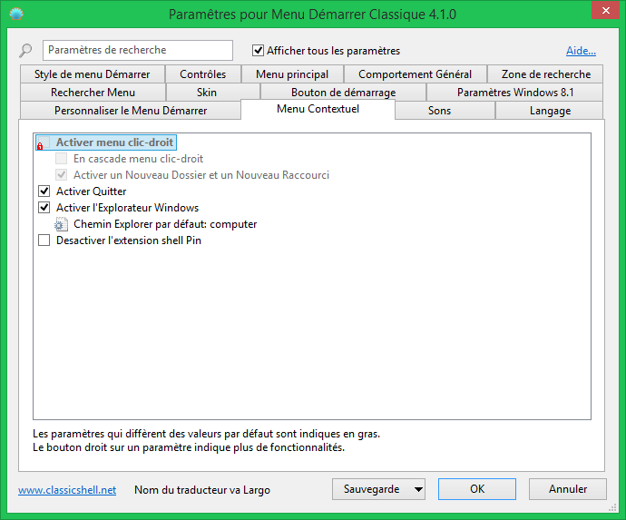
Dans cet exemple le paramètre "Activer menu clic-droit" est verrouillé non coché et ne peut pas être modifer par aucun utilisateur. Ceci est rendu possible par l’ajout du paramètre HKEY_LOCAL_MACHINE\SOFTWARE\OpenShell\Menu dans la clef de registrerie. Créez une valeur DWORD nommée "EnableContextMenu" et
configurez là à 0.
Dans certains cas vous ne voudrez peut être pas verrouiller une valeur pour tous les utilisateurs, mais simplement modifier la valeur initiale du paramètre. Dans ce cas ajoutez "_Default" au
nom de la valeur. Par exemple si vous voulez que le menu contextuel soit désactivé par défaut mais que vous voulez autoriser les utilisateurs à modifier cette valeur s’ils le veulent, créez
une valeur DWORD nommée "EnableContextMenu_Default" et configurez là à 0.
La façon la plus facile de connaître le nom registrerie d'un paramètre et ça valeur pour la modifier, est de la rechercher dans HKEY_CURRENT_USER\Software\OpenShell\StartMenu\Settings.
Quelqes fois vous voudrez verrouiller un paramètre à sa valeur par défaut, mais vous ne savez quelle est la valeur par défaut. Dans ce cas créez une valeur DWORD et
configurez là à 0xDEFA.
Il y a aussi un paramètre global "EnableSettings". Configurez le à 0 dans la registrerie pour même empêcher les utilisateurs d’ouvrir la boîte de dialogue des Paramètres :

Le menu démarrer vérifie aussi la plupart des stratégies de groupe configurées par l’administrateur. Exécutez gpedit.msc et aller à Configuration User Configuration -> Modèles Administratifs -> Menu Démarrer et Barre des Tâches. A partir de là, vous pouvez désactiver Exécuter, Arrêter, Aide, et d'autres fonctions. (Non disponible sur les version Home de Windows).
Modifier les paramètres au travers des stratégies de groupe est aussi supporté. Décompressez le fichier PolicyDefinitions.zip qui se trouve dans le dossier d’installation et lisez le document PolicyDefinitions.rtf pour plus de détails.
En savoir plus à propos des Peaux (Skins)
Vous pouvez choisir parmis les nombreuses peaux (skins) préinstallés :
 pour le Menu Classique Démarrer (Open-Shell Menu)")
Ou vous pouvez télécharger et installer une peau (skin) additionnelle tierce partie (à partir du site web principal ou d’un autre endroit).
Après avoir télécharger une nouvelle peau (skin) vous devez copier le fichier .skin dans le dossier Skins – habituellement dans C:\Program
Files\Open-Shell\Skins. Après cela, elle sera disponible dans les paramètres.
Note: Certaines peaux (skins) peuvent être spécifiquement conçues pour le mode
Classic, Basic, ou Aero. Par exemple une peau (skin) Aero nécessitera peut être le support de l'option verre, les autres auront une apparence bizarre si le thème Classique (Classic) ou Base (Basic) est sélectionné. Certaines peaux (skins) Aero nécessiteront aussi peut être une couleur de verre spécifique à sélectionner.
Vous pouvez créer votre propre peau (skin). Vous aurez besoin d'un logiciel de retouche d’image qui supporte le canal Alpha (comme Gimp ou Photoshop) et un outil pour modifier les fichiers ressources (comme Resource Hacker ou Visual Studio). Et bien sûr quelques talents en conception de graphisme :). Lisez le Tutoriel de peaux (Skinning Tutorial) en anglais avant de commencer.
Recherche
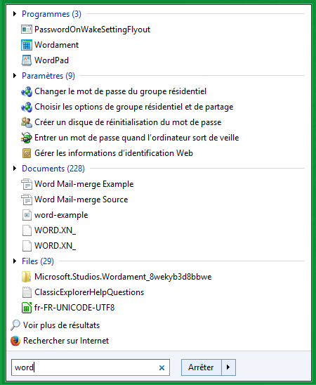
La zone de recherche vous laisse rechercher du contenu dans le menu démarrer, les programmes qui se trouvent dans la variable d'environnement PATH et les fichiers indexés.
Vous pouvez avoir la zone de recherche apparaître sous forme d'élément de menu normal et ensuite vous pouvez y aller en utilisant les touches claviers flèches haut/bas.
Vous pouvez choisir d'avoir la zone de recherche sélectionné par défaut quand vous ouvrez le menu démarrer. Ou vous pouvez choisir d’activer la zone de recherche seulement avec la touche Tab, de façon que tant que vous n'utilisez pas la touche tab vous pouvez utiliser le clavier pour naviguer comme si la zone de recherche n'était pas là.
Les résultats de recherche s'affichent dans le menu principal si vous utilisez le style Windows 7 ou dans un sous-menu pour les styles Classiques (Classic).
Cliquez sur chaque catégorie pour la développer et voir plus de résultats. Cliquez sur l’icône à la fin pour voir tous les résultats dans l’Explorateur.
Les styles Classiques (Classic) vous permettent de configurer des "fournisseurs de recherche" additionnels, que vous pouvez utiliser pour rechercher du texte à partir de la zone de recherche. Vous pouvez exécuter ce programme de recherche soit en le sélectionnant à partir du menu, soit en appuyant sur la touche Alt. Dans cet exemple utilisez Alt+A pour l'Agent Ransack.
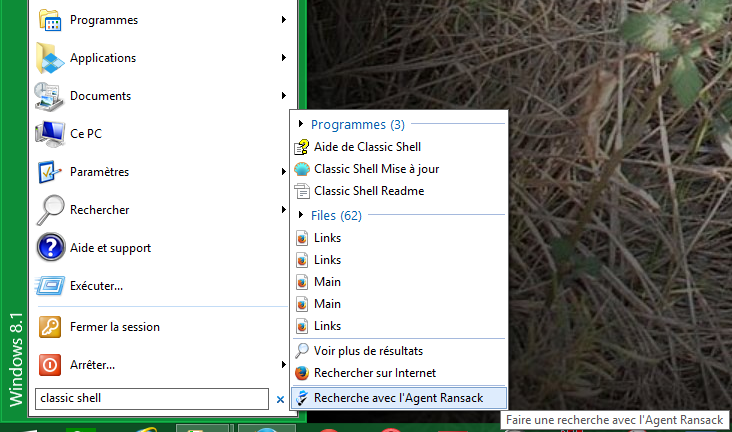
Ceci est fait en ajoutant des sous-éléments à l'élément zone de recherche dans l’onglet Personnaliser le Menu Démarrer :
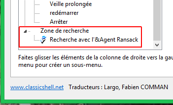
Ouvrez chaque sous-élément et saisissez la commande pour démarrer le programme de recherche. Si vous utilisez %1 dans la commande, cela sera remplacé par le contenu de la zone de recherche. Si vous utilisez %2 cela sera remplacé par le texte de la zone de recherche encodé au format url.
Saisissez une étiquette, bulle d’aide, et icône pour compléter cet élément de menu. Dans l’étiquette vous pouvez utiliser
& pour marquer le caractère d’accélération (par exemple &Agent Ransack).
Voilà quelques commandes possibles :
Recherche avec l’Agent Ransack : "C:\Program Files\Agent Ransack\AgentRansack.exe" -r -f "%1"
Recherche avec Everything : "C:\Program Files\Everything\Everything.exe" -search "%1"
Recherche avec Google : http://www.google.com/#q=%2
Recherche avec Bing : http://www.bing.com/search?q=%2
Bouton Démarrer Personnalisable
Open-Shell peut ajouter son propre bouton démarrer à la barre des tâches. Il peut même remplacer le bouton démarrer par défaut de Windows 7.
Vous pouvez choisir entre un bouton orbe style Aero, un bouton classique rectangulaire, ou vous pouvez faire le vôtre. Pour un bouton démarrer personnalisé vous avez besoin
d’une image qui contient 3 états du bouton - normal, chaud et cliqué :

L’image doit être un PNG 32-bit ou un BMP. Par défaut la largeur de l’image détermine la taille du bouton. Vous pouvez surcharger ceci en saisissant
une largeur personnalisée.
Lisez le Tutorial du bouton (Button Tutorial) en anglais pour plus d’information sur la création
de boutons personnalisés.
Vous pouvez trouver de nombreuses images de bouton de menu démarrer en ligne. Voici quelques exemples :
http://www.classicshell.net/forum/viewforum.php?f=18
http://www.sevenforums.com/themes-styles/34951-custom-start-menu-button-collection.html
http://www.sevenforums.com/customization/78291-big-group-custom-start-orbs.html
http://tutoriales13.deviantart.com/art/Orbs-153450418
Localisation
L'interface utilisateur (excepté la boîte de dialogue des Paramètres) est localisée en 35 langages.
La boîte de dialogue des Paramètres est traduite dans un moins grand nombre de langages.
L’installation par défaut contient seulement l'Anglais. Plus de langages peuvent être télécharger à partir de
page de traduction (translations page). Soyez certain de télécharger le paquet de traduction pour la version exact
de votre Open-Shell.
Ligne de commande
Le StartMenu.exe supporte 5 paramètres de commandes en ligne : -open, -toggle, -togglenew, -exit and -settings.
Les deux premiers font ce que leurs noms suggèrent. L’un ouvre le menu classique démarrer (classic start menu), l’autre le bascule.
Vous pouvez utilisez les paramètres pour créer un raccourci dans votre barre de lancement rapide qui ouvre le menu démarrer. Ou pour configurer
un raccourci clavier dans un programme comme WinKey.
Le troisième "-togglenew" bascule le menu démarrer par défaut de Windows (ou écran d'accueil). C’est utile si vous voulez créer un raccourci ou un raccouci clavier pour ouvrir le
menu par défaut et utiliser la touche Win pour le menu classique (classic menu)
Utilisez "-exit" pour sortir du menu démarrer. Cette commande ne marchera que si le menu démarrer n'est pas occupé.
Utilisez "-settings" pour ouvrir la boîte de dialogue des Paramètres. Ceci est utile pour créer un raccourci pour modifier les paramètres.
Accessibilité
Le menu démarrer supporte les lecteurs d’écran comme JAWS,
ou Microsoft's Narrator. Si le support pour l'accessibilité pause des problèmes, il peut être désactiver à partir de l’onglet
Comportement Général des Paramètres.